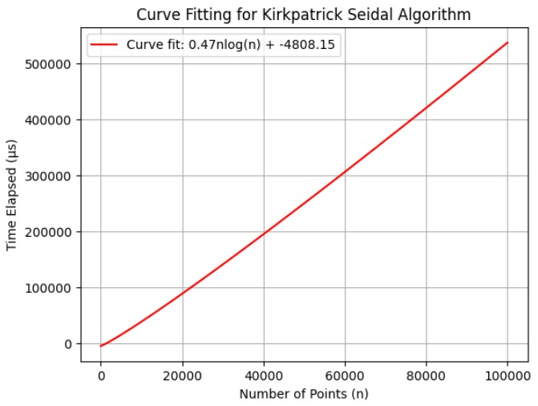

Convex Hull Algorithms:
- Computer Graphics: In computer graphics, convex hull algorithms are used for collision detection, ray tracing, and rendering.
- Geographic Information Systems: Convex hull algorithms play a crucial role in GIS for spatial analysis, such as identifying the boundaries of geographic regions, determining the extent of areas, and analyzing patterns in geographical data.
- Robotics: In robotics, convex hulls are utilized for path planning, obstacle avoidance, and determining the reachable workspace of robotic arms. They help robots navigate efficiently in complex environments while avoiding collisions.
- Machine Learning: Convex hull algorithms are used in pattern recognition tasks such as clustering, classification, and outlier detection. They help simplify complex datasets by identifying the most relevant features and patterns.
- Simulation and Optimization: In simulation and optimization problems, convex hull algorithms are applied to model constraints, define feasible regions, and optimize solutions.
Kirk Patrick Seidel Algorithm
Description:
The Kirkpatrick-Seidel algorithm is a method used to compute the convex hull of a set of points in the plane. It is an advanced algorithm that achieves optimal time complexity by recursively partitioning the point set into smaller subsets and then merging the resulting convex hulls.
Algorithm:
The algorithm begins by preprocessing the input points to eliminate redundant points and ensure they are in general position. It then recursively partitions the point set into smaller subsets using divide-and-conquer techniques.
At each step of the recursion, the algorithm selects a line that divides the point set into two approximately equal-sized subsets. It then computes the convex hulls of these subsets independently. The convex hulls are merged using a process called "upper tangent" and "lower tangent" computation, resulting in the convex hull of the entire point set.
The main steps of the Kirkpatrick-Seidel algorithm can be summarized as follows:
- Preprocess the input points to ensure they are in general position.
- Recursively partition the point set into smaller subsets using divide-and-conquer.
- Compute the convex hulls of the subsets independently.
- Merge the convex hulls using upper and lower tangent computation.
The correctness and efficiency of the Kirkpatrick-Seidel algorithm rely on its ability to divide the point set into balanced subsets and merge the resulting convex hulls efficiently.
Run Time Analysis:
The Kirkpatrick-Seidel algorithm achieves an optimal time complexity of \(O(n \log h)\), where \(n\) is the number of input points and \(h\) is the number of vertices on the convex hull. This complexity makes it one of the fastest algorithms for computing the convex hull in practice.
Jarvis March
Description:
Jarvis's March, also known as the gift-wrapping algorithm, is a method used to compute the convex hull of a set of points in the plane. The algorithm operates by iteratively finding the next vertex of the convex hull in counterclockwise order. While its time complexity of \(O(nh)\) is generally less efficient than Graham's scan for large values of \(h\) (the number of vertices on the hull), it proves superior when \(h\) is asymptotically smaller than the logarithm of \(n\), denoted as \(h = o(\log n)\).
Algorithm:
The process begins by selecting an initial point, \(v_1\), which is guaranteed to be on the convex hull. This point is typically chosen as the one with the smallest \(y\)-coordinate. Subsequently, the algorithm repeatedly identifies the next vertex of the hull by minimizing the turning angle between the current vertex and the previous two vertices. The turning angle of a point \(r\) with respect to points \(p\) and \(q\) is the counterclockwise angle between the directed line segments \(pq\) and \(qr\).
To facilitate the algorithm, an imaginary "sentinel point" \(v_0 = (-\infty, 0)\) is introduced, ensuring that the initial line segment \(v_0v_1\) is directed horizontally to the right. This initialization step allows the algorithm to proceed smoothly.
The main steps of Jarvis's March can be summarized as follows:
- Begin with the set of points \(P\).
- Set \(v_0 = (-\infty, 0)\) and identify \(v_1\) as the point in \(P\) with the smallest \(y\)-coordinate.
- For \(i = 2, 3, \ldots\),
- Find \(v_i\) as the point in \(P \setminus \{v_{i-1}, v_{i-2}\}\) that minimizes the turning angle with respect to \(v_{i-2}\) and \(v_{i-1}\).
- If \(v_i\) equals \(v_1\), terminate and return the sequence of vertices \(hv_1, \ldots, v_{i-1}v_i\) representing the convex hull.
The correctness of the algorithm stems from the property that, at each iteration, the next vertex \(v_i\) minimizes the turning angle, ensuring the construction of the convex hull in counterclockwise order.
Although the computation of turning angles can be achieved using basic trigonometry in constant time, it is interesting to note that angle comparisons can be made using orientation tests alone. This observation implies that if the input coordinates are integers, the vertices of the convex hull can be computed exactly, assuming double-precision integer computations.
Run Time Analysis:
In terms of runtime analysis, the computation of \(v_1\) takes \(O(n)\) time, and each iteration of the algorithm can be implemented in \(O(n)\) time. Consequently, the overall time complexity of Jarvis's March is \(O(n + nh) = O(nh)\), where \(h\) represents the number of vertices on the convex hull.
Comparison
Kirk Patrick Seidel Algorithm has an asymptotic time complexity of \(O(n \log h)\) whereas Jarvis March has \(O(nh)\). However, in terms of simplicity in terms of the algorithm and its implementation, Jarvis March is much simpler than Kirk Patrick Seidel. In our testing, we observed that the constant factor of \(nh\) in Jarvis March is much lesser than the constant factor of \(n \log h\) in Kirk Patrick Seidel. This would mean that, although at very high number of points, Kirk Patrick has better time complexity, but until \(100000\) points, it was observed that Jarvis March was performing better.
Group ID - C
Team Members:
- Aashish Chandra K (2021A7PS0467H)
- Vamsi Krishna Gattupalli (2021A7PS0040H)
- Rohit Reddy Daareddy (2021A7PS0372H)
- Tanish Gottimukkala (2021A7PS0047H)
- Maheswar Bora (2021A7TS1505H)